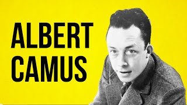
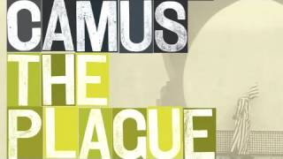
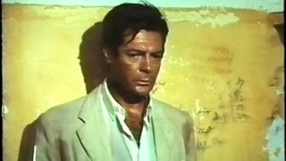

Recommended Members
Recent Videos
The Theater of the Absurd
350k views
350k views
Samuel Beckett: A Short Biography
122k views
122k views
An Interview with Eugène Ionesco
1.4k views
1.4k views

A Day with Albert Camus
21k views
21k views

Camus's Plague and its Symbols
12k views
12k views
Ionesco's Rhinoceros
28k views
28k views
La Leçon, by Ionesco
144k views
144k views

Mastroanni in the Stranger
1.6m views
1.6m views
Most Watched
The Theater of the Absurd
350k views
350k views
Samuel Beckett: A Short Biography
122k views
122k views
An Absurdist Class Play
204k views
204k views
Revolving Door: a Play
312k views
312k views
Godot in Algiers
267k views
267k views
Les Justes: a Review
122k views
122k views
Exit the King
582k views
582k views